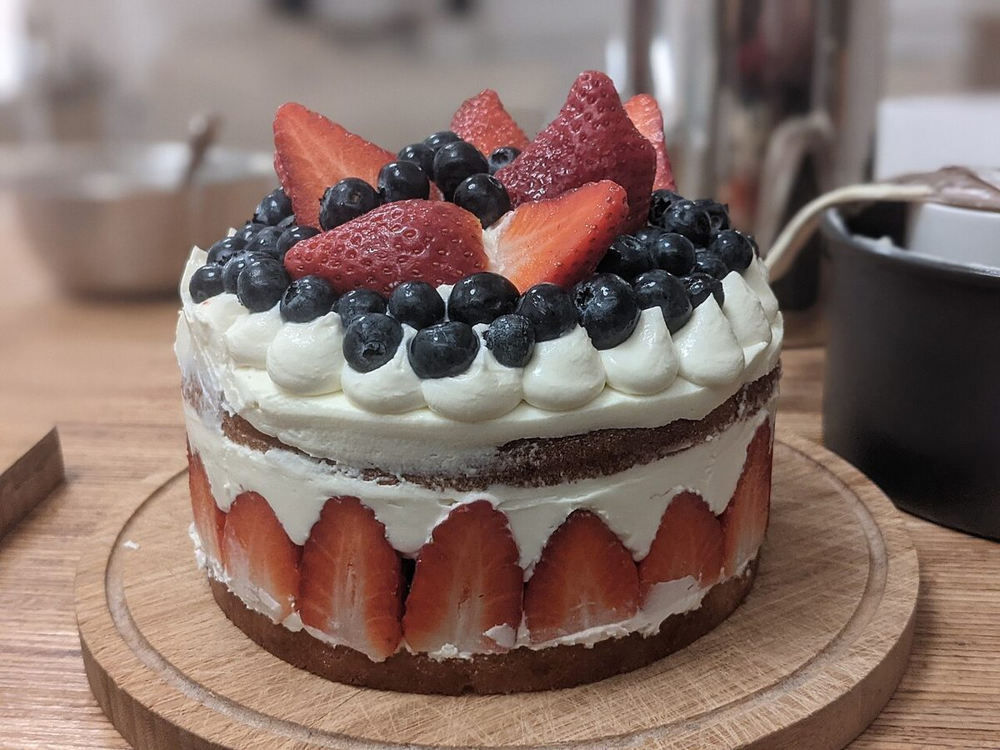
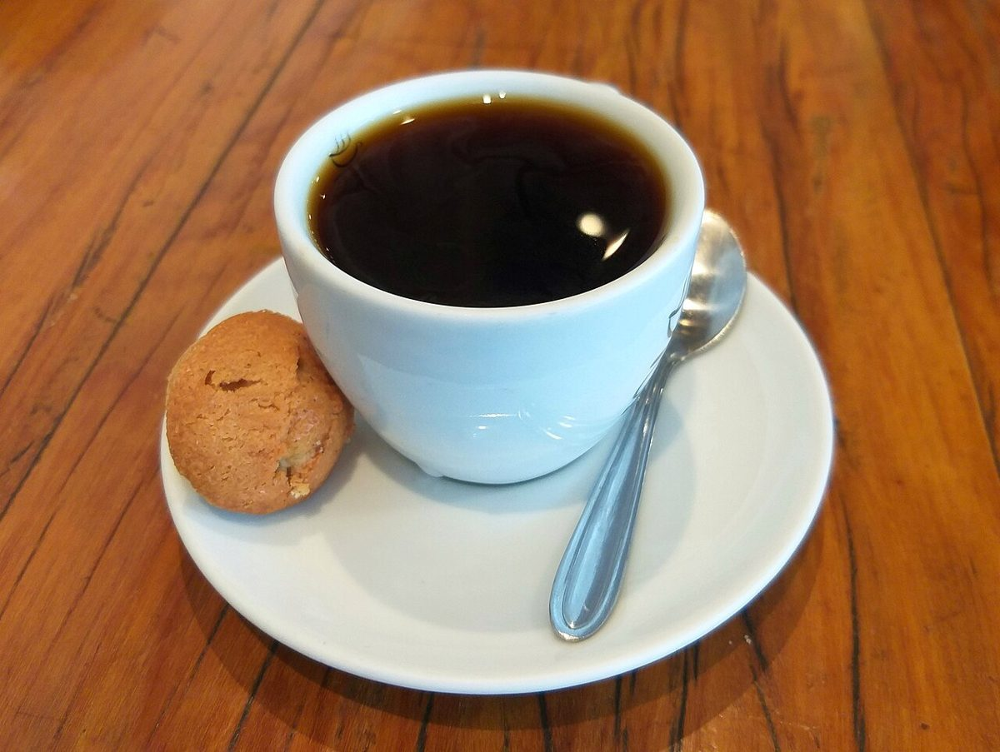
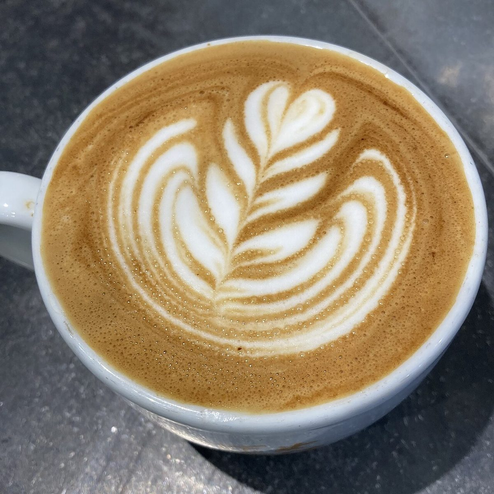

茨城県結城市 カフェ
ひと息つく、
一杯ぶんの時間。
caferobinet のサンプルサイトです。コーヒーとスイーツの写真を中心に、お店の雰囲気を伝える構成を制作側で考えました。



※ここに載せている言葉は、お店の方からお聞きした内容ではなく、制作側が考えた案です。
ご案内

コンセプト案
慌ただしい日の合間に、カップをひとつ置いて座る。そんな「小休止」をそっと支えるカフェ、という方向性を制作側で考えました。
席の雰囲気や提供内容など、お店のことは正式な情報をいただいたうえで差し替えます。



ご来店前のご確認は、お電話で。
0296-33-5112営業時間：準備中（お問い合わせください）